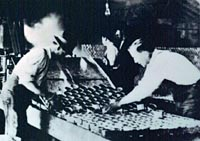

|
Cooking bannock over an open fire is a traditional example of the use of heat to make an unleavened bread with good keeping qualities. Bannock may be made from wheat, barley or oat flour, and may include berries.
Bannock was originally a Scottish food, introduced to the native peoples by immigrants. It is still consumed today.
A Sioux woman uses the radiant heat of the sun to dry meat. Buffalo meat was dried in strips, crushed on rocks, then mixed with berries and melted fat to make pemmican. Pemmican is a highly concentrated nutritious food which may be stored for months before use, then eaten as is, or used in soup to restore its tenderness.
Fermentation
This method of making alcoholic beverages, was practised by the Ancient Egyptians as long ago as 2000 B.C. At the back of this scene, a man stands in a barrel, using his feet to mix bread with water.
Beer making is based on water, malted cereal grains and an additional source of carbohydrates, such as bread.
Traditionally, fish were salted by applying brine to the fish, then laying them out on a rack. This process is repeated over one or two days until the fish are cured.

Canning
This process, developed by a Frenchman, Nicholas Appert in 1795, was one of the earliest forms of food preservation done on an industrial scale. The shelf-life of canned foods is virtually indefinite.
The canning process uses heat to destroy harmful microorganisms. The entire can of food must be subject to very high temperature. Canned beans are heated at 121 degrees C for twelve minutes. Other foods such as pork and beans must be heated for over 100 minutes at 118 degrees C.
Heat
Heat is probably the most widespread method of preserving food. Cooking is usually the last thing done before food is consumed. During this process many of the harmful bacteria such as E.coli are destroyed. One of the most deadly toxins that causes botulism, produced by the bacteria Clostridium botulinum, can only be destroyed by exposing food to moist heat at over 100 degrees celsius for ten minutes. Be careful how you cook your hamburgers!
Various degrees of heat treatment are sterilization, Pasteurization and blanching and Ultra-high-temperature (UHT)
UHT apple juice is packaged under aseptic, or sterile, conditions. UHT processing is an alternative to canning. Instead of heating juice in the tin, it is heated to very high temperatures before it is packaged, then delivered directly into sterilized packages.
UHT processing and aseptic packaging are two innovations which were developed concurrently. UHT food is heated to 140-144 degrees C for a few seconds by mixing the food with steam, which is very soon after removed from the food,
resulting in almost instantaneous cooling. Aseptic
packaging involves the use of special plastic film,
sometimes combined with aluminum foil, which is produced
under sterile conditions.
Drying
A dielectric oven is used to dry crackers in a modern food processing plant. The essential principle underlying the drying of foods is dehydration, or the removal of water from food. Hot air used in various types of air driers is a common method of food preservation. The heat required by air driers is large, but hot air permits gradual drying and
sufficient control over the process to prevent scorching or discolouration.
Every possible precaution is taken to ensure that dried
foods such as crackers enjoy an optimum shelf-life. High quality raw materials are carefully stored, then pasteurized before drying to destroy harmful bacteria.
There are several methods of dehydration. In spray drying,fluid foods such as milk are sprayed into a stream of hot air, resulting in milk powder. Liquid or pasty foods may be dried by applying them to hot stainless steel rolls, then scraping off the dry material at the end of a revolution.
Freeze-drying is a sophisticated method of food dehydration. The water molecules in frozen food are vaporized, resulting in very little damage to the food. This is an expensive procedure used mainly for convenience items such as instant coffee, or specialized foods such as mountaineering supplies or army rations.
Fermentation
During fermentation, simple sugars are converted into alcohol and carbon dioxide. The choice of ingredients, as well as the sequence of operations, determine whether beer, wine or other liquors are produced.
Canada's wine industry is concentrated in the Niagara Peninsula in Ontario and the B.C. Interior. New and hardier grape hybrids make it possible to harvest a good crop in Canada's limited growing season. Wine is made all over the country from fruits. In Saskatchewan, local favorite wines are made from native berries such as choke cherries and saskatoons.
Chemical Preservatives
The chemical preservation of food involves additives like sodium nitrite, the only food additive known to be effective against the microorganisms which cause botulism, or food-poisoning. Sodium nitrite gives the characteristic pink colour to cured meats such as wieners and sausages.
Freezing

Food preservation by freezing involves the same principles as preservation by drying. Water is unavailable for the
growth of harmful bacteria because it has become ice. Different freezing systems freeze food at different rates, from slow to very fast. The faster the freezing method, the less likely the food will suffer damage, or "freezer burn".
Frozen food has a limited lifetime in a kitchen refrigerator/freezer. Poorly packaged food will suffer freezer-burn as ice sublimates form the surface of the food.
Packaging
Modified Atmosphere Packaging is a process which prolongs the keeping qualities of baked goods, cheese and meats.
Food is packaged in an atmosphere enriched with carbon dioxide.
The carbon dioxide retards microbial growth, inhibiting the development of molds and keeping food fresher for longer.
Irradiation
Food irradiation is the only new preservation technology developed this century. Various kinds of fruit, such as
strawberries, may be irradiated by a stream of electrons, killing harmful microorganisms. No radiation is induced into the food by this process and no hazard to human health has ever been reported by this treatment. The process is especially useful in hospitals where some patients have to eat sterile meals.
IMF
A whole new class of foods, called intermediate moisture foods (IMF), have been developed as a result of the U.S.
space exploration program.
These foods--breakfast bars and snack foods, as well as pet food--are produced with the careful use of certain food additives. The production of IMF foods is based on an increased scientific understanding of the chemical reactions involved in traditional food preservation methods such as pickling and salting.
IMF products are characterized by a semi-moist consistency. These foods have enough moisture content to permit easy chewing but low enough water content to prevent spoilage. IMF cookies are not as crisp as traditional cookies, but have a melt-in-the-mouth quality that is appealing to consumers.
|